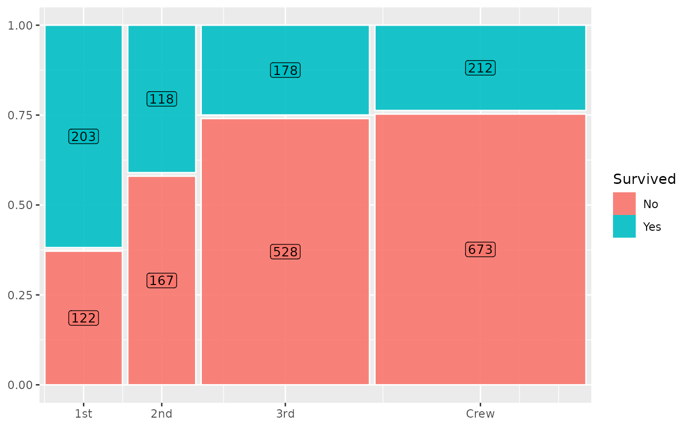

Add labels with background to a Marimekko plot
geom_mekko_label.RdAdd labels with background to a Marimekko plot
Usage
geom_mekko_label(
mapping = NULL,
data = NULL,
position = "identity",
...,
gap = 0.01,
gap_x = NULL,
gap_y = NULL,
standardize = FALSE,
residuals = FALSE,
size = 3.5,
colour = "black",
label.padding = unit(0.15, "lines"),
na.rm = FALSE,
show.legend = FALSE,
inherit.aes = FALSE
)Arguments
- mapping
Set of aesthetic mappings created by
ggplot2::aes(). Requiresx(categorical) andfill(categorical). Optionally acceptsweightfor weighted counts.- data
The data to be displayed in this layer.
- position
Position adjustment. Defaults to
"identity".- ...
Other arguments passed to
ggplot2::layer().- gap
Numeric. Size of gap between tiles as a fraction of total plot area. Default
0.01. Set to0for no gaps. Used for both horizontal and vertical gaps unlessgap_xorgap_yis specified.- gap_x
Numeric. Horizontal gap between columns. Overrides
gapfor the x direction. DefaultNULL(usesgap).- gap_y
Numeric. Vertical gap between segments within columns. Overrides
gapfor the y direction. DefaultNULL(usesgap).- standardize
Logical. If
TRUE, all columns have equal width (spine plot mode). DefaultFALSE.- residuals
Logical. If
TRUE, compute Pearson residuals and expose them as the.residcomputed variable. DefaultFALSE.- size
Text size. Default
3.5.- colour
Text colour. Default
"black".- label.padding
Amount of padding around label. Default
ggplot2::unit(0.15, "lines").- na.rm
If
FALSE(default), removes missing values with a warning.- show.legend
Logical. Should this layer be included in legends?
- inherit.aes
Logical. If
FALSE, overrides default aesthetics.
Examples
library(ggplot2)
titanic <- as.data.frame(Titanic)
ggplot(titanic) +
geom_mekko(aes(x = Class, fill = Survived, weight = Freq)) +
geom_mekko_label(aes(
x = Class, fill = Survived, weight = Freq,
label = after_stat(weight)
)) +
scale_x_mekko()
